14 Means and Markov’s Inequality
$$ \newcommand{X}{} \newcommand{Y}{} % A hex digit after # inside a macro body is eaten by build-time expansion, so digit-leading hexes spell # via .
$$
The Center Is an Expectation
We’ve been working with these distributions and we’ve been talking about their sampling distributions. And we’ve been talking about them having a center. This is what we mean by that.
What did we mean when we talked about a center? We meant an expected value — this long run sum.
Here’s the definition. The expectation of a random variable is its probability-weighted average, \mathop{\mathrm{E}}[X] = \sum_x \textcolor{#EF476F}{x}\textcolor{#118AB2}{P(X=x)}. That means summing, over the x axis, the product of the x, the position along the x-axis and the P(X=x), the bar height at that position. In the picture above, the positions are the values \hat\theta takes and the bar heights are their probabilities.
Here’s the dot version of it. Remember: histograms are for counting dots. Each purple dot above is one sample’s \hat\theta, and the height of a bar is the fraction of the dots standing at that position, so summing position times bar height is averaging the dots. The expectation is the average of infinitely many dots. That is called the law of large numbers; next time.
Does that tell us where the distribution is located, i.e., where draws are likely to be? If not, why is that useful? On this picture the answer to the first question is yes. At the end of the chapter we come back to it on distributions where it is no.
Why We Liked This
Why did we like this? It’s because it’s right. The blue line is on top of the green line.
The reason we center here is it works. The center is exactly what we wanted to estimate. We call estimators like this unbiased and we’ll see why these are unbiased and how to know that things are unbiased.
The motivation for using the expectation doesn’t have to be complicated at all. It can just be that you want to center the thing on the thing you want to estimate. We’re always talking about how to calibrate effectively so that we contain the center of the distribution a certain frequency of the time, and that’s only useful if the center of the distribution is where you want it to be.
What do we do when we don’t know the formula for the sampling distribution? Operationally, we bootstrap it. Theoretically, we calculate its first and second moments to characterize its location and spread.
Today, we’re going to talk about what’s so easy about it and what we can do with it alone.
To See What’s Easy, Revisit Something Hard
To see what’s easy, we’re going to revisit something hard. How we calculated these distributions in the first place.
How We Got Here
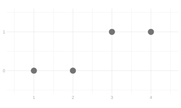
We’re going to draw a sample of size 2 from the population above. Here is the distribution of the total we get, sampling with replacement first and then without.
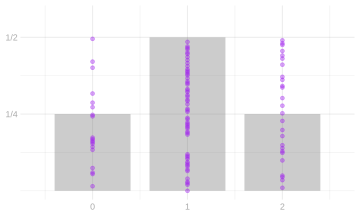
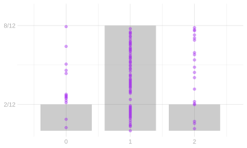
These are distributions we have had for weeks: with replacement the total is binomial, without replacement it is hypergeometric. We did the binomial before, and the hypergeometric; repetition is fine, and here we are taking a different view of them, less tabular and more dimensional, so you can see the relation.
And here is how we got them. List the call sequences. Replace each person called by their response. Add.
Two Calls
Every call sequence is equally likely. That follows from the design; it is not assumed. With replacement, each call is an independent uniform pick, so all sixteen ordered pairs of people are equally likely. Without replacement, the sample is a shuffle, so all twelve ordered pairs of distinct people are.
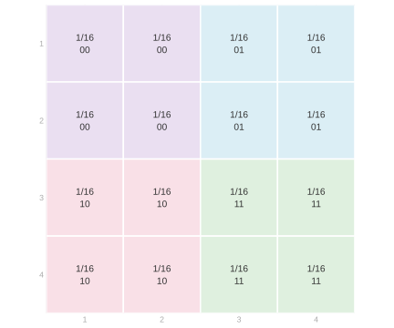
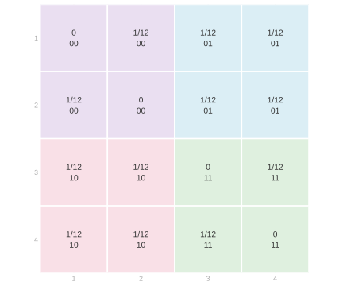
Rows are the first person called and columns the second, so each cell is one call sequence. In the cell is its probability and the pair of responses those two people give, and the color groups the cells by that pair of responses. With replacement, the first grid, every cell is 1/16. Without replacement, the second, the diagonal is impossible and the twelve cells off it are 1/12 each.
The colors stay the same. The probabilities in the grid you’re coloring change.
| J1 | J2 | Y1 | Y2 | With replacement | Without replacement |
|---|---|---|---|---|---|
| 1 | 1 | 0 | 0 | 1/16 | 0 |
| 1 | 2 | 0 | 0 | 1/16 | 1/12 |
| 2 | 1 | 0 | 0 | 1/16 | 1/12 |
| 2 | 2 | 0 | 0 | 1/16 | 0 |
| 1 | 3 | 0 | 1 | 1/16 | 1/12 |
| 1 | 4 | 0 | 1 | 1/16 | 1/12 |
| 2 | 3 | 0 | 1 | 1/16 | 1/12 |
| 2 | 4 | 0 | 1 | 1/16 | 1/12 |
| 3 | 1 | 1 | 0 | 1/16 | 1/12 |
| 3 | 2 | 1 | 0 | 1/16 | 1/12 |
| 4 | 1 | 1 | 0 | 1/16 | 1/12 |
| 4 | 2 | 1 | 0 | 1/16 | 1/12 |
| 3 | 3 | 1 | 1 | 1/16 | 0 |
| 3 | 4 | 1 | 1 | 1/16 | 1/12 |
| 4 | 3 | 1 | 1 | 1/16 | 1/12 |
| 4 | 4 | 1 | 1 | 1/16 | 0 |
The table is the same sixteen call sequences, one column per call, with the two schemes’ probabilities side by side and the rows in the colors of the grid.
Aggregate the colored cells into the response grid. Each block of one color in the call grid is the set of call sequences giving one pair of responses, so each block collapses to a single cell, with rows the first response and columns the second.
Four cells of 1/16 in each block gives 1/4 with replacement; without replacement the blocks are not all the same size, and we get 2/12 where the two responses agree and 4/12 where they differ.
Aggregate the response grid into the distribution of the total above. The two cells where the responses differ both have total 1, so they add together into the middle bar.
Change the Population
Change the population to three zeros and one one, and stay there.
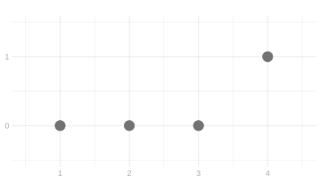
The probabilities are the same; what gets colored changed.
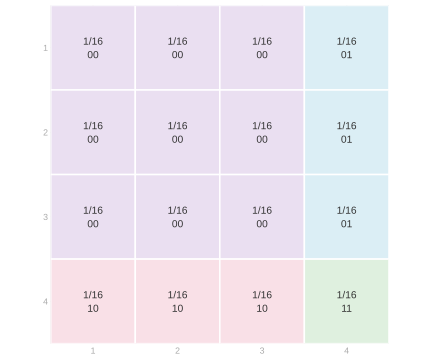
| J1 | J2 | Y1 | Y2 | With replacement | Without replacement |
|---|---|---|---|---|---|
| 1 | 1 | 0 | 0 | 1/16 | 0 |
| 1 | 2 | 0 | 0 | 1/16 | 1/12 |
| 1 | 3 | 0 | 0 | 1/16 | 1/12 |
| 2 | 1 | 0 | 0 | 1/16 | 1/12 |
| 2 | 2 | 0 | 0 | 1/16 | 0 |
| 2 | 3 | 0 | 0 | 1/16 | 1/12 |
| 3 | 1 | 0 | 0 | 1/16 | 1/12 |
| 3 | 2 | 0 | 0 | 1/16 | 1/12 |
| 3 | 3 | 0 | 0 | 1/16 | 0 |
| 1 | 4 | 0 | 1 | 1/16 | 1/12 |
| 2 | 4 | 0 | 1 | 1/16 | 1/12 |
| 3 | 4 | 0 | 1 | 1/16 | 1/12 |
| 4 | 1 | 1 | 0 | 1/16 | 1/12 |
| 4 | 2 | 1 | 0 | 1/16 | 1/12 |
| 4 | 3 | 1 | 0 | 1/16 | 1/12 |
| 4 | 4 | 1 | 1 | 1/16 | 0 |
Nine of the sixteen call sequences now reach a zero twice, and only one reaches the single one twice. Aggregate the colors into the response grid, then the response grid into the total, exactly as before.

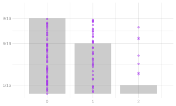
Three Calls, Worked and Skippable
You can do it. We’re going to include it here, but also the whole point is you don’t want to do this. So go ahead and skim this, because no one wants to do this.
Three calls on the same population, with replacement. Each layer fixes the third person called — person 1 in the top layer down to person 4 in the bottom one — and within a layer, rows are the first call and columns the second. The four layers are the third axis.


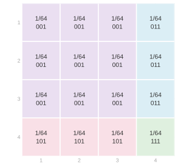
Collect the sixty-four cells by their response sequence.
| Responses | Probability | Total |
|---|---|---|
| 000 | 27/64 | 0 |
| 001 | 9/64 | 1 |
| 010 | 9/64 | 1 |
| 100 | 9/64 | 1 |
| 011 | 3/64 | 2 |
| 101 | 3/64 | 2 |
| 110 | 3/64 | 2 |
| 111 | 1/64 | 3 |
Then collect the response sequences by their total.
| Total | Probability |
|---|---|
| 0 | 27/64 |
| 1 | 27/64 |
| 2 | 9/64 |
| 3 | 1/64 |
One or Two Calls out of Three
Suppose we only want the distribution of one call, or of a pair. Everything is set up, so let’s do it mechanically first.
To get from three calls to two, add across the layers. Fix a first call and a second call: the four cells in that position, one in each layer, are the four possibilities for the third call, and adding them gives 4/64 = 1/16 — the two-call grid back, cell for cell. And nothing picked out the first two calls: fix any pair of the three and add over the remaining one, and the same thing happens.
To get from two calls to one, sum a row or a column.
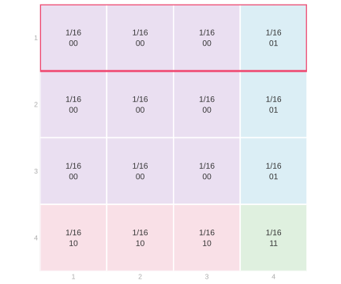
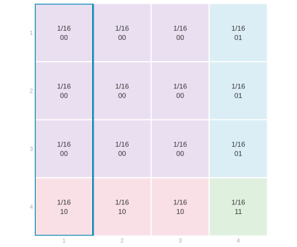
The pink row is every call sequence whose first call is person 1, and it adds to 1/4. The teal column is every sequence whose second call is person 1, and it adds to 1/4 too. The same holds for each of the other three people, and grouping the people by their response turns that into the distribution of one response.
Why you didn’t have to. The first call, obviously. But what’s special about the first? Nothing. That’s the argument.
What’s doing the work is uniformity among all possible call sequences; the possible set varies.
If you could change the distribution of a deck by cutting it, you wouldn’t be allowed to cut it.
There’s a way of understanding that using the physical metaphor, almost obviously. If you’re rolling a die, it doesn’t matter how many times you roll it on each individual roll or each pair of rolls. The same thing’s going to happen. It’s maybe a little less obvious when you shuffle a deck. If you shuffle a deck and draw the top card, or you shuffle a deck and then you cut it and you draw the top card, or the top two or whatever — the cut isn’t going to change the fact that all configurations are equally likely post-cut. And that’s true if you just cut it twice. They don’t have to be consecutive numbers. This isn’t a universal phenomenon. You can design schemes that are not like this. But these, and most things we work with, have this property.
And this isn’t something that’s buried in a physical metaphor. It’s in the math. If all sequences are equally likely, then any pair of slots will have the subsequences in those pairs being equally likely. Otherwise the whole premise was false.
The calculation was a painstaking way of seeing that. The calculation is useful to get the distribution of the sum. But the calculation just to get down to a smaller sample size — didn’t really have to do it. It just falls out of the principle of the thing. From sequences to subsequences.
What Can This Do for Us?
So the point is, if we just want to know the distribution of one or two things, that’s great. Because that’s not an overwhelming problem. But what can this do for us?
What’s Special about Expectations: Linearity
So the question, what’s so special about expectations that they don’t make us do all this nightmarish stuff, is linearity. The point is: expectations depend only on the marginals.
Here is the response grid for our population again, three zeros and one one, sampling with replacement.
Take the total S=Y_1+Y_2 and do it the long way, reading the cells off the grid: each cell’s total times that cell’s probability, added up. The top left cell is two zeros, so its total is 0; the two off-diagonal cells have total 1; the bottom right cell is two ones, so its total is 2, \mathop{\mathrm{E}}[S]=0\times\frac9{16}+1\times\frac3{16}+1\times\frac3{16}+2\times\frac1{16} =\frac{8}{16}=\frac12.
Now regroup that same sum into a first-call pass and a second-call pass. Every cell’s total is the first response plus the second, so \mathop{\mathrm{E}}[S]=\underbrace{0\times\frac{9+3}{16}+1\times\frac{3+1}{16}}_{\text{the rows}} \;+\;\underbrace{0\times\frac{9+3}{16}+1\times\frac{3+1}{16}}_{\text{the columns}} =\frac14+\frac14=\frac12. The two passes come out the same here because both calls have the same distribution; what matters is what each used. The first pass used only the row totals, and the rows are the distribution of the first response. The second used only the column totals, which are the distribution of the second. So \mathop{\mathrm{E}}[Y_1+Y_2]=\mathop{\mathrm{E}}[Y_1]+\mathop{\mathrm{E}}[Y_2], and the joint entered only through its margins.
We didn’t need this whole thing. And the aspect of it that we did need, we don’t need this for in the first place.
The same regrouping works for three calls, or n, without the cube.
\begin{aligned} E ( a Y + b Z ) &= E (aY) + E (bZ) \\ &= aE(Y) + bE(Z) \\ & \text{ for random variables $Y, Z$ and numbers $a,b$ } \end{aligned}
There are two things going on here. To average a sum of two things, we can take two averages and sum. To average a constant times a random variable, we multiply the random variable’s average by the constant. In other words, we can distribute expectations and can pull constants out of them. These rules do not require the two random variables to be independent.
Proof of Linearity
In essence, it comes down to the fact that all we’re doing is summing. Expectations are probability-weighted sums. And we’re looking at the expectation of a sum. And we can change the order we sum in without changing what we get. The marginalization step sums along a row or column of the joint distribution.
\small{ \begin{aligned} \mathop{\mathrm{E}}\p*{ a Y + b Z } &\overset{\texttip{\small{\text{?}}}{ by definition of expectation}}{=} \sum_{y}\sum_z (a y + b z) \ P(Y=y, Z=z) \\ &\overset{\texttip{\small{\text{?}}}{changing the order in which we sum}}{=} \sum_{y}\sum_z a y \ P(Y=y, Z=z) + \sum_{z}\sum_y b z \ P(Y=y, Z=z) \\ &\overset{\texttip{\small{\text{?}}}{pulling constants out of the inner sums}}{=} \sum_{y} a y \ \sum_z P(Y=y,Z=z) + \sum_{z} b z \ \sum_y P(Y=y,Z=z) \\ &\overset{\texttip{\small{\text{?}}}{summing to get marginal probabilities from our joint }}{=} \sum_{y} a y \ P(Y=y) + \sum_{z} b z \ P(Z=z) \\ &\overset{\texttip{\small{\text{?}}}{ pulling constants out of the remaining sum }}{=} a\sum_{y} y \ P(Y=y) + b\sum_{z} z \ P(Z=z) \\ &\overset{\texttip{\small{\text{?}}}{by definition}}{=} a\mathop{\mathrm{E}}Y + b \mathop{\mathrm{E}}Z. \end{aligned} }
Unbiasedness
The margins are free, so the expected value of our sample mean is our population mean.
A Tool: Probability as Expectation
A tool we use here is understanding probability as an expectation. Write the indicator that call i selected person j, 1_{=j}(J_i) = \begin{cases} 1 & \qqtext{ for } J_i = j \\ 0 & \qqtext{ otherwise} \end{cases} It is one on exactly the calls that landed on person j, so its probability-weighted average is the probability of landing there, \mathop{\mathrm{E}}[1_{=j}(J_i)] = 0\,P(J_i\ne j) + 1\,P(J_i=j) = P(J_i=j).
This is a principle, not a notational trick: probabilities are expectations of indicators. The indicator keeps exactly the part of the random outcome that matters for the event and throws everything else away. Its probability-weighted average is the probability that it is one. Consequently, every rule we prove for expectations is also a tool for probabilities.
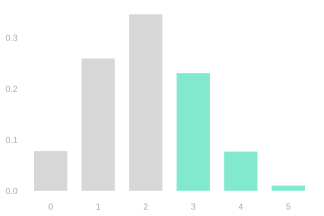
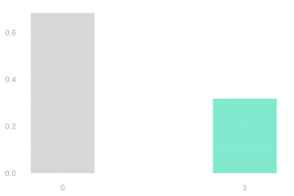
On the left is the distribution of a count X, with the outcomes in the event X\ge3 in green. On the right is the distribution of 1_{\ge3}(X), which has just two outcomes: it is zero with the gray probability and one with the green probability, 0.317. That green height is both P(X\ge3) and \mathop{\mathrm{E}}[1_{\ge3}(X)] — the same number read two ways.
Sampling Uniformly at Random
A die roll: equally likely to be any side. The top of a shuffled deck: equally likely to be any card. Where a spinner lands: equally likely to be in any of its equal-sized sectors. These are ways to select uniformly at random.
For sampling, the possibilities are people. Number the people in a population from 1 to m. Sampling one person uniformly at random means each person has probability 1/m of being selected, P(J_i=j)=\frac1m \qqtext{ for } j = 1 \ldots m.
The Three Schemes
The population has 100 people: 40 respond one and 60 respond zero. Compare samples of 5, 20, and 80 people under three mechanisms:
- With replacement: select each person uniformly and independently from the whole population.
- Without replacement: select uniformly from the people not yet chosen.
- Random-start cycle: arrange the 40 ones followed by the 60 zeros around a circle. Select a starting person uniformly, then take consecutive people.
Below are those nine cases: sample sizes 5, 20 and 80 down the rows, the three mechanisms across the columns. Where are the distributions of the sample average located? How do their spreads compare? What changes as the sample grows?
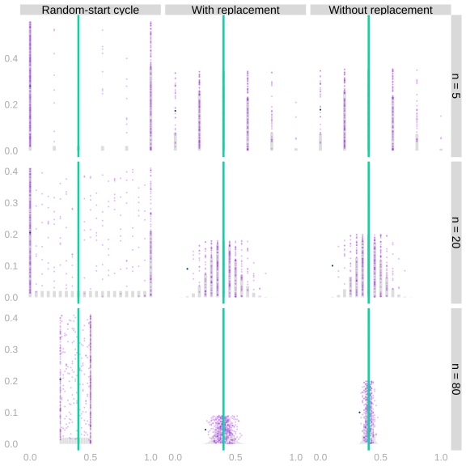
Average over the Population
Let the fixed population values be y_1\ldots y_m, with population mean \mu. On draw i we select person J_i and observe Y_i=y_{J_i}.
Use an indicator for each possible selection. Exactly one is one, so this sum picks out the selected person’s value:
Y_i=\sum_{j=1}^{m}y_j1_{\{J_i=j\}}.
Linearity and the indicator trick turn its expectation into the population average:
\begin{aligned} \mathop{\mathrm{E}}[Y_i] &\overset{\texttip{\small{\text{?}}}{linearity}}{=}\sum_{j=1}^{m}y_j\mathop{\mathrm{E}}[1_{\{J_i=j\}}]\\ &\overset{\texttip{\small{\text{?}}}{probability as expectation}}{=}\sum_{j=1}^{m}y_jP(J_i=j)\\ &\overset{\texttip{\small{\text{?}}}{uniform sampling}}{=}\frac{1}{m}\sum_{j=1}^{m}y_j\\ &=\mu. \end{aligned}
Unbiasedness of the Sample Mean
The sample mean is \hat\mu=n^{-1}\sum_{i=1}^nY_i. Claim. It is an unbiased estimator of the population mean. \mathop{\mathrm{E}}[\hat\mu] = \mu
\begin{aligned} \mathop{\mathrm{E}}\sb*{\frac1n\sum_{i=1}^n Y_i} &\overset{\texttip{\small{\text{?}}}{via linearity}}{=} \frac1n\sum_{i=1}^n \mathop{\mathrm{E}}[Y_i] \\ &\overset{\texttip{\small{\text{?}}}{via equal-probability sampling}}{=} \frac1n\sum_{i=1}^n \mu \\ &= \frac1n \times n \times \mu = \mu. \end{aligned}
The sample mean is an unbiased estimator of the population mean. We have worked out its location without constructing its distribution. Next chapter we do the same for its spread.
Lack of independence does not make calculating the expectation of a mean any harder. Why not? Because linearity of expectation doesn’t require independence.
The blue line and the green line coincide, under every one of the three schemes, and we never built the distribution.
It did in fact matter which center. We calibrated to contain a fraction of the distribution around it. But it only works because it’s unbiased.
An Expectation Alone Bounds a Probability: Markov’s Inequality
Recall: Indicators
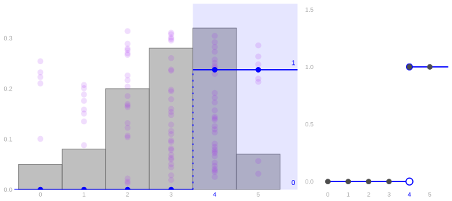
The indicator is 1 for the points inside the blue region and 0 for the points outside. The mean of the indicators is the fraction of points inside. That is the tool from the last section, used on an event of the form X\ge t: \mathop{\mathrm{E}}[1_{\ge t}(X)]=P(X\ge t).
How Much Can Lie Above t?
Suppose X\ge0 and we know \mathop{\mathrm{E}}[X]. For t>0, how large can P(X\ge t) be?
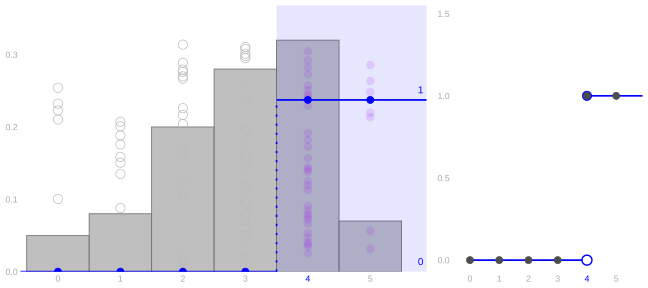
Each dot’s area is now the value of the indicator at that dot: zero below t, one at or above it, and the step function beside the histogram is what that draws. The indicator counts the tail. Can we bound it using a multiple of x?
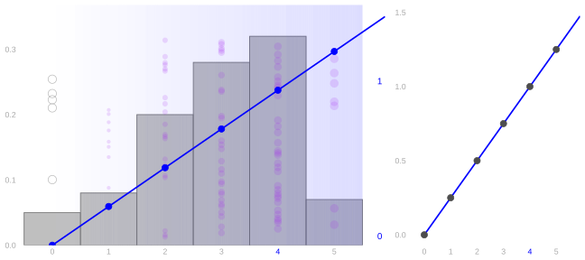
For x\ge0, the ramp u_t(x)=x/t stays above the indicator: 1_{\ge t}(x)\le u_t(x).
The horizontal axis still shows x. Height now shows the value represented by shade and dot area. For every nonnegative x, \begin{aligned} x\ge t &: \quad 1_{\ge t}(x)=1\le x/t,\\ 0\le x<t &: \quad 1_{\ge t}(x)=0\le x/t. \end{aligned}
Averages Keep the Order
If a(x)\le b(x) for every possible value x of X, then \mathop{\mathrm{E}}[a(X)]\le \mathop{\mathrm{E}}[b(X)]. The proof is just the definition of expectation. Every difference b(x)-a(x) is nonnegative, and every probability is nonnegative, so \mathop{\mathrm{E}}[b(X)]-\mathop{\mathrm{E}}[a(X)] =\sum_x \{b(x)-a(x)\}P(X=x)\ge 0.
Markov’s Inequality
For every nonnegative random variable X and t>0, \begin{aligned} P(X\ge t) &\overset{\texttip{\small{\text{?}}}{probability as expectation}}{=}\mathop{\mathrm{E}}[1_{\ge t}(X)]\\ &\overset{\texttip{\small{\text{?}}}{the ramp bounds the indicator}}{\le}\mathop{\mathrm{E}}[u_t(X)]\\ &\overset{\texttip{\small{\text{?}}}{the bounding ramp}}{=}\mathop{\mathrm{E}}\sb*{\frac Xt}\\ &\overset{\texttip{\small{\text{?}}}{linearity}}{=}\frac{\mathop{\mathrm{E}}[X]}t. \end{aligned}
Versatility
Back to the question we left standing at the start: does the expectation tell us where the distribution is located, i.e. where draws are likely to be? If not, why is that useful? Here are three shapes with the same picture drawn on each — a single bump, then flips, then two bumps — with the ramp shade across the panel, the green line at the mean, and the cutoff at t dotted.
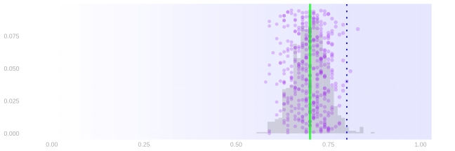
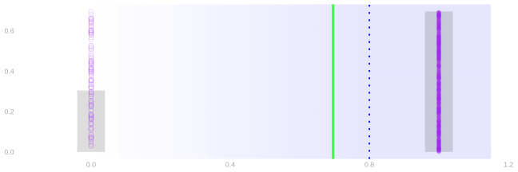
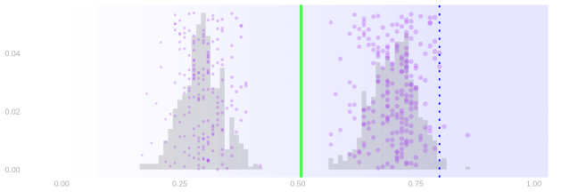
On the flips and on the two bumps the mean is nowhere a dot lands. This is not location in the traditional sense, and Markov’s inequality still works: the bound needs the mean and nonnegativity, and neither of those asks where the draws are.
Why Must X Be Nonnegative?
Here is one.
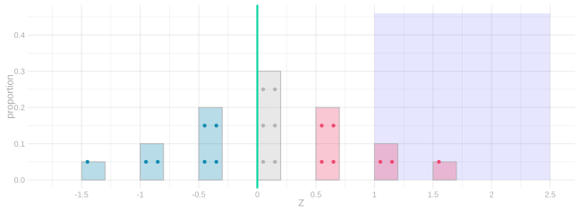
For this centered variable Z, \mathop{\mathrm{E}}[Z]=0,\qquad P(Z\ge1)=\frac{36}{240}>0=\frac{\mathop{\mathrm{E}}[Z]}1.
For a Sample Mean
The sample proportion \hat\theta is nonnegative and its expectation is \theta, so Markov applies to it directly. Take the threshold t=20\theta, P(\hat\theta\ge 20\theta)\le\frac{\mathop{\mathrm{E}}[\hat\theta]}{20\theta}=\frac{\theta}{20\theta}=\frac1{20}. So with probability at least 95\% our estimate came in below 20\theta, and rearranging that gives a lower bound on the population proportion, \theta\ge 0.05\,\hat\theta. At \hat\theta=0.7 that is \theta\ge 0.035. The bound is one-sided, and nothing in it mentions n.
Beside it, the one-sided bound you get from the bootstrap or the binomial. Each picture below is one sample size — twenty, eighty, then three hundred twenty observations per sample. The bars are the sampling distribution of \hat\theta, the dots are a hundred estimates drawn from it, and five of those estimates are drawn with their lower bounds: Markov’s in midnight and the plug-in bound in pink. “How bad might this be for us” is a legit question.
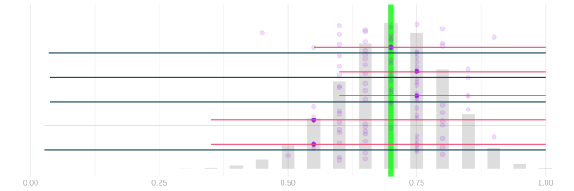
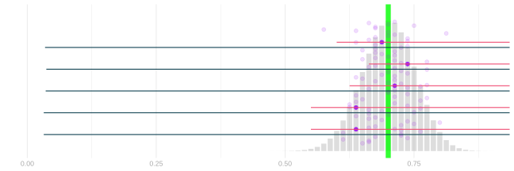
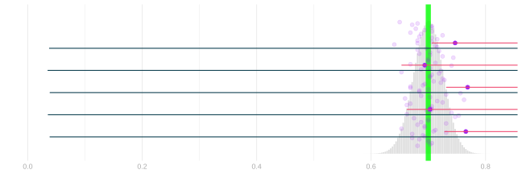
Bounding 1-\hat\theta instead gives a bound on the other side: transforming to nonnegative. That’s a homework trick.
Markov Asks How Big. So Ask How Far.
Markov does not care about sample size. The resolution is not hard — Markov simply doesn’t ask the question of how concentrated things are, how far things are from the mean. It just asks how big. So ask.